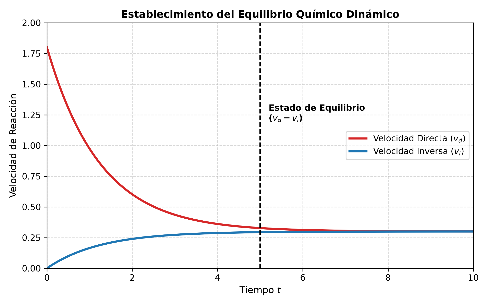
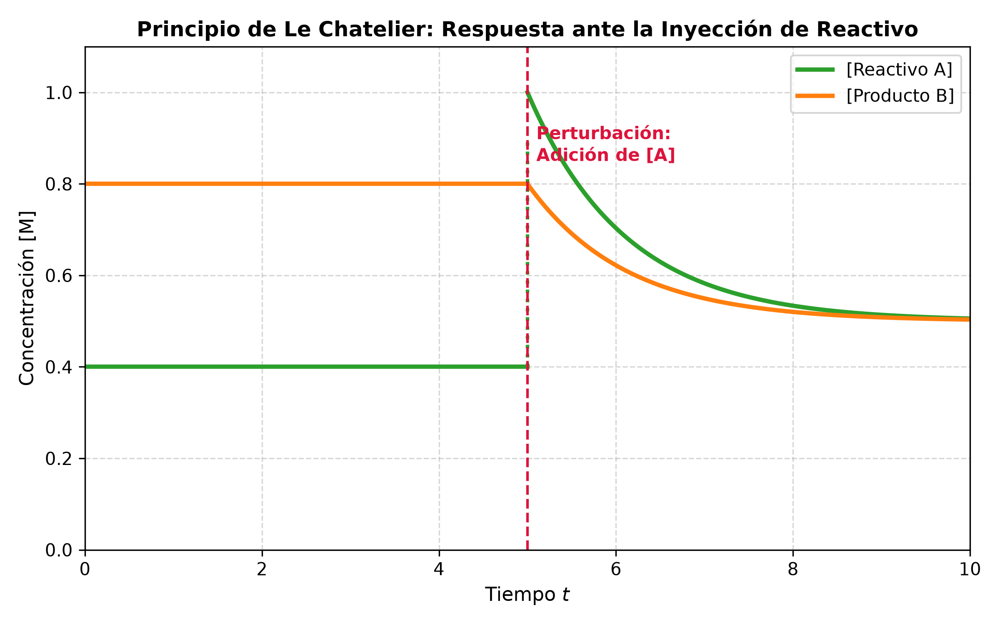

5.2 Equilibrio Químico y Principio de Le Chatelier
1. Marco Teórico y Concepto de Equilibrio Dinámico
El Equilibrio Químico es un estado dinámico que se alcanza en una reacción reversible cuando las velocidades de la reacción directa (\(v_d\)) e inversa (\(v_i\)) se igualan, haciendo que las concentraciones de reactivos y productos permanezcan constantes en el tiempo.
A. Naturaleza del Equilibrio
- Reacción Reversible: Proceso químico en el cual los productos pueden reaccionar entre sí para regenerar los reactivos originales (\(a\text{A} + b\text{B} \rightleftharpoons c\text{C} + d\text{D}\)).
- Equilibrio Dinámico: A nivel microscópico las reacciones directa e inversa continúan ocurriendo simultáneamente a la misma velocidad (\(v_d = v_i\)), aunque a nivel macroscópico no se observan cambios en las propiedades del sistema (como color, presión o concentración).

2. Constante de Equilibrio (\(K_c\) y \(K_p\))
La Ley de Acción de Masas establece que para una reacción reversible en equilibrio a una temperatura dada, la relación entre las concentraciones de productos y reactivos elevados a sus coeficientes estequiométricos es una constante.
Para la reacción general: $\(a\text{A}(g) + b\text{B}(g) \rightleftharpoons c\text{C}(g) + d\text{D}(g)\)$
A. Constante en Función de las Concentraciones (\(K_c\))
B. Constante en Función de las Presiones Parciales (\(K_p\))
Para sistemas gaseosos, expresando la presión parcial en atmósferas: $\(K_p = \frac{P_\text{C}^c \cdot P_\text{D}^d}{P_\text{A}^a \cdot P_\text{B}^b}\)$
C. Relación entre \(K_c\) y \(K_p\)
A partir de la ecuación de estado del gas ideal (\(P = \frac{n}{V}RT = [\text{X}]RT\)), se deduce la relación:
Donde: * \(R = 0.08206 \frac{\text{atm} \cdot \text{L}}{\text{mol} \cdot \text{K}}\) (o \(8.314 \frac{\text{J}}{\text{mol} \cdot \text{K}}\) si se emplean presiones en Pascales). * \(T\): Temperatura absoluta en Kelvin (\(\text{K}\)). * \(\Delta n = (c + d) - (a + b)\): Cambio en el número de moles de componentes gaseosos (moles de productos gaseosos menos moles de reactivos gaseosos).
D. Equilibrios Homogéneos vs. Heterogéneos
- Equilibrio Homogéneo: Todas las especies involucradas se encuentran en la misma fase.
- Equilibrio Heterogéneo: Las especies se encuentran en fases distintas.
- Regla Fundamental: Las concentraciones de sólidos puros \((s)\) y líquidos puros \((l)\) son constantes y no se incluyen en la expresión de \(K_c\) ni \(K_p\).
3. Cociente de Reacción (\(Q\)) y Predicción de la Dirección
El Cociente de Reacción (\(Q\)) tiene la misma forma matemática que la constante de equilibrio, pero se evalúa utilizando las concentraciones o presiones en un instante arbitrario (no necesariamente en equilibrio).
Criterio de Comparación:
- \(Q < K\): La concentración de reactivos es mayor que en el equilibrio. La reacción avanza hacia la derecha (\(\rightarrow\), formación de productos).
- \(Q = K\): El sistema se encuentra en equilibrio químico.
- \(Q > K\): La concentración de productos es mayor que en el equilibrio. La reacción avanza hacia la izquierda (\(\leftarrow\), formación de reactivos).
4. Principio de Le Chatelier
"Si un sistema en equilibrio es sometido a un cambio o perturbación en las condiciones externas (concentración, presión, volumen o temperatura), el sistema desplazará su posición de equilibrio en la dirección que contrarreste parcialmente dicha perturbación."

Factores que Afectan el Equilibrio:
- Cambio de Concentración:
- Agregar reactivo o retirar producto \(\rightarrow\) El equilibrio se desplaza hacia la derecha (\(\rightarrow\)).
- Retirar reactivo o agregar producto \(\rightarrow\) El equilibrio se desplaza hacia la izquierda (\(\leftarrow\)).
- Cambio de Presión / Volumen (Sistemas Gaseosos):
- Aumento de Presión (Reducción de \(V\)): El equilibrio se desplaza hacia el lado con menor número de moles de gas.
- Disminución de Presión (Aumento de \(V\)): El equilibrio se desplaza hacia el lado con mayor número de moles de gas.
- Si \(\Delta n = 0\), la presión o el volumen no alteran la posición de equilibrio.
- Cambio de Temperatura (Único factor que altera el valor numérico de \(K\)):
- Reacción Exotérmica (\(\Delta H < 0\)): El calor actúa como un producto. Aumentar \(T\) desplaza el equilibrio a la izquierda y disminuye \(K\).
- Reacción Endotérmica (\(\Delta H > 0\)): El calor actúa como un reactivo. Aumentar \(T\) desplaza el equilibrio a la derecha y aumenta \(K\).
- Presencia de Catalizadores:
- Aumentan por igual la velocidad de la reacción directa e inversa (\(v_d\) y \(v_i\)). No alteran la posición de equilibrio ni el valor de \(K\); solo reducen el tiempo necesario para alcanzar el equilibrio.
5. Ejercicios Resueltos del TP de Equilibrio Químico
Ejercicio 1: Cálculo de \(K_c\) y \(K_p\) a partir de Concentraciones en Equilibrio
Enunciado: En un recipiente cerrado de \(2.0 \text{ L}\) a \(500\text{ K}\), se introducen cantidades de \(\text{N}_2\) y \(\text{H}_2\). Al alcanzar el equilibrio para la síntesis de amoníaco:
$\(\text{N}_2(g) + 3\text{H}_2(g) \rightleftharpoons 2\text{NH}_3(g)\)$
Se encuentran presente \(0.40 \text{ moles}\) de \(\text{N}_2\), \(1.20 \text{ moles}\) de \(\text{H}_2\) y \(0.80 \text{ moles}\) de \(\text{NH}_3\).
Calcular \(K_c\) y \(K_p\) a \(500\text{ K}\).
Desarrollo Analítico:
-
Cálculo de concentraciones molares en equilibrio (\([\text{X}] = \frac{n}{V}\)): $\([\text{N}_2] = \frac{0.40 \text{ mol}}{2.0 \text{ L}} = 0.20 \text{ M}\)$ $\([\text{H}_2] = \frac{1.20 \text{ mol}}{2.0 \text{ L}} = 0.60 \text{ M}\)$ $\([\text{NH}_3] = \frac{0.80 \text{ mol}}{2.0 \text{ L}} = 0.40 \text{ M}\)$
-
Expresión y Cálculo de \(K_c\): $\(K_c = \frac{[\text{NH}_3]^2}{[\text{N}_2] [\text{H}_2]^3} = \frac{(0.40)^2}{(0.20) (0.60)^3} = \frac{0.16}{(0.20)(0.216)} = \frac{0.16}{0.0432} \approx 3.704 \text{ M}^{-2}\)$
-
Cálculo de \(K_p\): Calculamos \(\Delta n = n_{\text{productos}(g)} - n_{\text{reactivos}(g)} = 2 - (1 + 3) = -2\). $\(K_p = K_c (R T)^{\Delta n} = 3.704 \cdot (0.08206 \cdot 500)^{-2}\)$ $\(K_p = 3.704 \cdot (41.03)^{-2} = \frac{3.704}{1683.46} \approx 2.20 \times 10^{-3} \text{ atm}^{-2}\)$
Ejercicio 2: Predicción de la Dirección de Reacción mediante \(Q_c\)
Enunciado: Para la reacción \(\text{H}_2(g) + \text{I}_2(g) \rightleftharpoons 2\text{HI}(g)\), la constante \(K_c = 54.3\) a \(430^\circ\text{C}\). En un recipiente se introducen \(0.10 \text{ M}\) de \(\text{H}_2\), \(0.20 \text{ M}\) de \(\text{I}_2\) y \(0.40 \text{ M}\) de \(\text{HI}\).
Determine si el sistema está en equilibrio y, de no ser así, en qué dirección avanzará la reacción.
Desarrollo Analítico:
-
Planteo y cálculo del cociente de reacción \(Q_c\): $\(Q_c = \frac{[\text{HI}]^2}{[\text{H}_2] [\text{I}_2]} = \frac{(0.40)^2}{(0.10)(0.20)} = \frac{0.16}{0.020} = 8.0\)$
-
Comparación entre \(Q_c\) y \(K_c\): $\(Q_c = 8.0 \quad \text{vs} \quad K_c = 54.3 \implies Q_c < K_c\)$
-
Conclusión: Puesto que \(Q_c < K_c\), el sistema no está en equilibrio. Para alcanzar el equilibrio, la concentración de productos debe aumentar, por lo que la reacción evoluciona hacia la derecha (\(\rightarrow\)).
6. Ejercicio Típico de Parcial Explicado Paso a Paso
Enunciado: Considere el siguiente sistema en equilibrio endotérmico a \(250^\circ\text{C}\):
$\(\text{PCl}_5(g) \rightleftharpoons \text{PCl}_3(g) + \text{Cl}_2(g) \quad \Delta H^\circ = +92.5 \text{ kJ/mol}\)$
Se colocan \(0.50 \text{ moles}\) de \(\text{PCl}_5\) en un recipiente rígido de \(5.0 \text{ L}\). En el equilibrio, la concentración de \(\text{Cl}_2\) es \(0.060 \text{ M}\).
a) Calcule las concentraciones en equilibrio de todas las especies y el valor de \(K_c\).
b) Justifique el efecto sobre el número de moles de \(\text{Cl}_2\) si:
1) Se añade más \(\text{PCl}_5(g)\).
2) Se disminuye el volumen del recipiente a la mitad.
3) Se aumenta la temperatura a \(400^\circ\text{C}\).
Resolución Explicada para Examen:
- Paso a): Tabla I.C.E. (Inicio, Cambio, Equilibrio)
- \([\text{PCl}_5]_0 = \frac{0.50 \text{ mol}}{5.0 \text{ L}} = 0.10 \text{ M}\)
| Especie | \(\text{PCl}_5(g)\) | \(\rightleftharpoons\) | \(\text{PCl}_3(g)\) | \(+\) | \(\text{Cl}_2(g)\) |
|---|---|---|---|---|---|
| Inicio (M) | 0.10 | 0 | 0 | ||
| Cambio (M) | \(-x\) | \(+x\) | \(+x\) | ||
| Equilibrio (M) | \(0.10 - x\) | \(x\) | \(x\) |
- Como en el equilibrio \([\text{Cl}_2] = 0.060 \text{ M}\), se deduce que \(x = 0.060 \text{ M}\).
Concentraciones en equilibrio: * \([\text{Cl}_2] = 0.060 \text{ M}\) * \([\text{PCl}_3] = 0.060 \text{ M}\) * \([\text{PCl}_5] = 0.10 - 0.060 = 0.040 \text{ M}\)
Cálculo de \(K_c\): $\(K_c = \frac{[\text{PCl}_3][\text{Cl}_2]}{[\text{PCl}_5]} = \frac{(0.060)(0.060)}{0.040} = \frac{0.0036}{0.040} = 0.090 \text{ M}\)$
- Paso b): Análisis de Perturbaciones (Principio de Le Chatelier)
- 1) Adición de \(\text{PCl}_5(g)\) (Reactivo):
Al aumentar la concentración del reactivo, el sistema busca consumirlo desplazándose hacia la derecha (\(\rightarrow\)). Por lo tanto, aumenta la cantidad de moles de \(\text{Cl}_2\). - 2) Reducción del volumen a la mitad (Aumento de presión total):
Al comprimir el sistema, este responde desplazándose hacia el lado de menor número de moles gaseosos (\(1 \text{ mol}\) de reactivos vs \(2 \text{ moles}\) de productos). El equilibrio se desplaza a la izquierda (\(\leftarrow\)), lo que provoca que disminuya el número de moles de \(\text{Cl}_2\). - 3) Aumento de la temperatura (Reacción Endotérmica, \(\Delta H > 0\)):
Tratándose de un proceso endotérmico, el calor absorbido actúa como reactivo (\(\text{Calor} + \text{PCl}_5 \rightleftharpoons \text{PCl}_3 + \text{Cl}_2\)). Al elevar \(T\), el sistema absorbe el exceso de calor desplazándose a la derecha (\(\rightarrow\)). En consecuencia, aumentan los moles de \(\text{Cl}_2\) (y también aumenta la constante \(K_c\)).
graph TD
A[Inicio: Sistema Reversible en Equilibrio] --> B[Evaluación de Constantes de Equilibrio]
B --> C[Expresión Kc en Concentraciones]
B --> D[Expresión Kp en Presiones Parciales]
C & D --> E[Relación: Kp = Kc * RT^Δn]
A --> F[Evaluación del Estado del Sistema]
F --> G[Cálculo del Cociente de Reacción Qc]
G --> H{Comparación Qc vs Kc}
H -->|Qc < Kc| I[Desplazamiento a la Derecha -> Formación de Productos]
H -->|Qc = Kc| J[Sistema en Equilibrio Químico]
H -->|Qc > Kc| K[Desplazamiento a la Izquierda <- Formación de Reactivos]
A --> L[Perturbaciones Externas: Principio de Le Chatelier]
L --> M[Cambio de Concentración]
L --> N[Cambio de Presión / Volumen]
L --> O[Cambio de Temperatura]
M --> P[Desplazamiento para amortiguar adición/extracción]
N --> Q[Aumento de P: Desplazamiento a menor moles de gas]
O --> R[Modifica el valor numérico de K según ΔH]
graph TD
A[Inicio: Sistema Reversible en Equilibrio] --> B[Evaluación de Constantes de Equilibrio]
B --> C[Expresión Kc en Concentraciones]
B --> D[Expresión Kp en Presiones Parciales]
C & D --> E[Relación: Kp = Kc * RT^Δn]
A --> F[Evaluación del Estado del Sistema]
F --> G[Cálculo del Cociente de Reacción Qc]
G --> H{Comparación Qc vs Kc}
H -->|Qc < Kc| I[Desplazamiento a la Derecha -> Formación de Productos]
H -->|Qc = Kc| J[Sistema en Equilibrio Químico]
H -->|Qc > Kc| K[Desplazamiento a la Izquierda <- Formación de Reactivos]
A --> L[Perturbaciones Externas: Principio de Le Chatelier]
L --> M[Cambio de Concentración]
L --> N[Cambio de Presión / Volumen]
L --> O[Cambio de Temperatura]
M --> P[Desplazamiento para amortiguar adición/extracción]
N --> Q[Aumento de P: Desplazamiento a menor moles de gas]
O --> R[Modifica el valor numérico de K según ΔH]